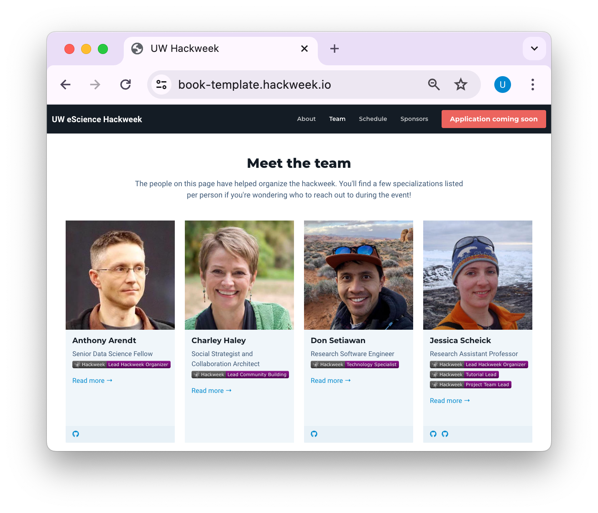
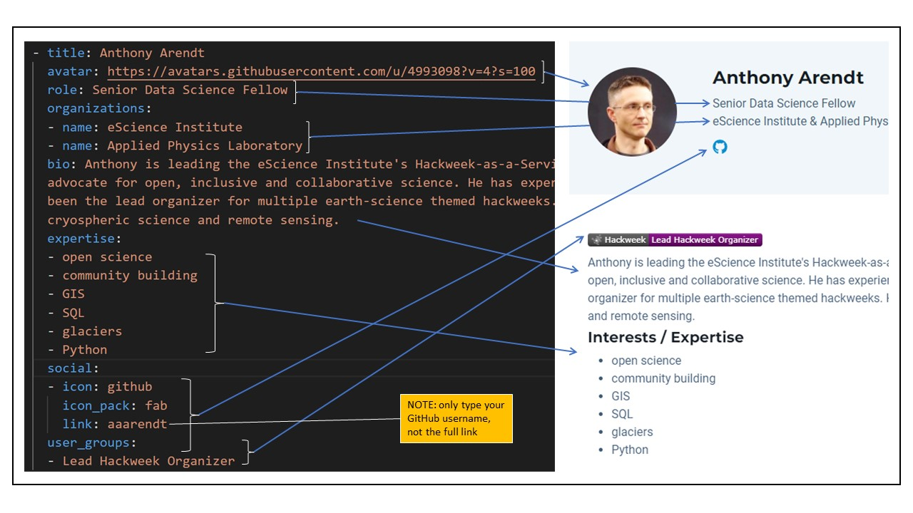
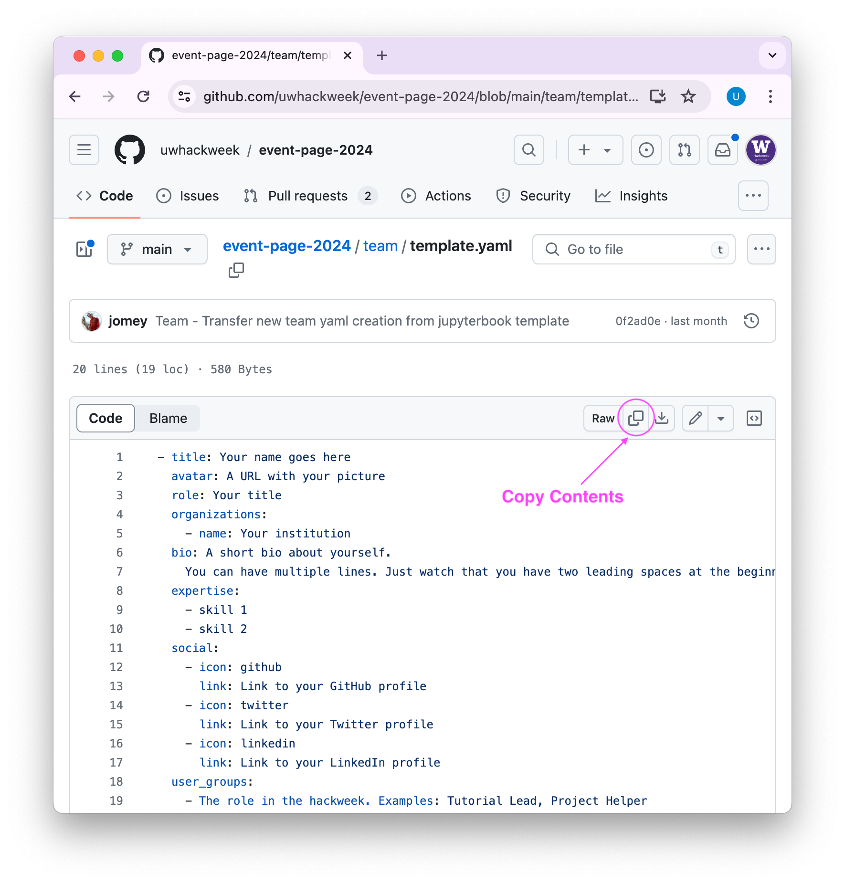
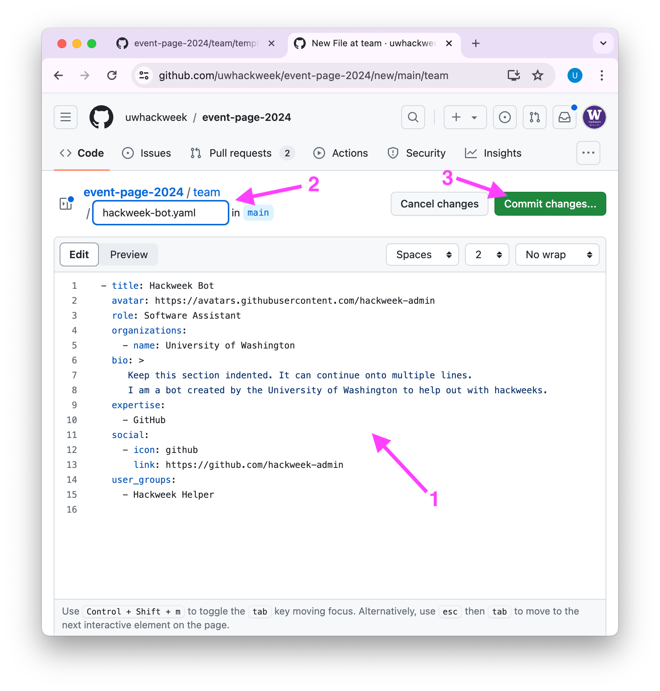
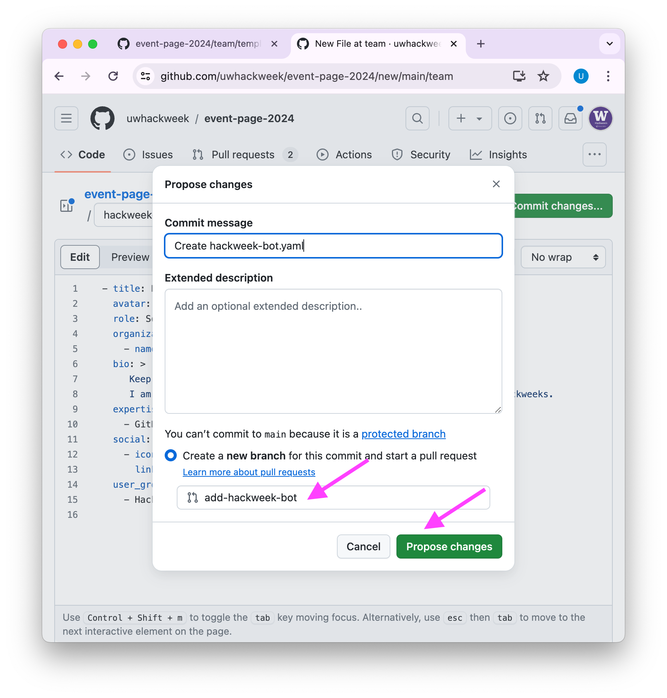
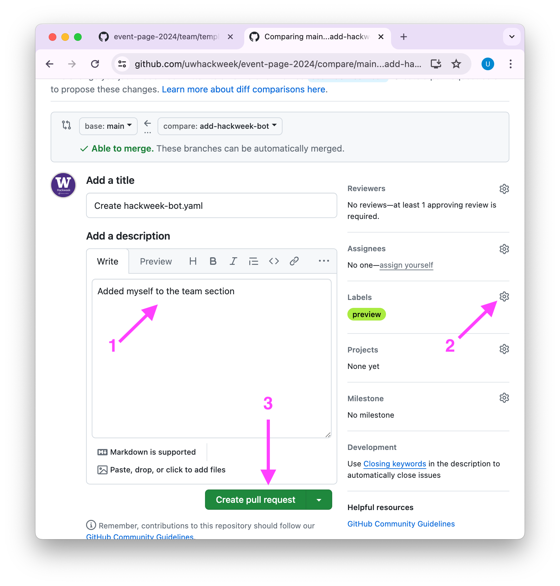

Recognizing Contributions#
There are a variety of ways that we would like to recognize community contributions to hackweeks.
Website Presence#
We invite all people who join us in organizing and hosting a hackweek to be included in our “Meet the team” section of each hackweek website:
{kind=link}
We use a YAML template to render this portion of the website. The arrows below map the template text to how it appears on the webs:
{kind=link}
Warning
So that the website correctly interprets the YAML format we recommend using our template and not changing indents or spacing.
We encourage everyone to use their GitHub avatar as the source of their personal photograph (e.g. https://avatars.githubusercontent.com/USERNAME)
Also provide your GitHub username, together with the full url, for the
linkkey undersocial(USERNAME)Acceptable user_groups (Hackweek “roles”) can be found here.
Uploading to the website#
To include your content on the website, follow these instructions or because YAML is a simple human-readable text format, you can add your content directly in the GitHub interface. We also show screenshots of doing this for a specific event below:
Go to uwhackweek/event-page-2024 and copy the contents of the template

Follow uwhackweek/event-page-2024 to make a new file. Paste the template contents, rename to FIRST-LAST.yaml

Commit to a new branch and open a pull request

Add the ‘preview’ label to your pull request to make sure your bio looks correct

Online Tutorials#
All of our tutorials are recorded and shared on the eScience Institute’s youtube channel. We encourage tutorial leads to link to these videos from their social media accounts and websites as a way to demonstrate their teaching competencies.
Referrals and Feedback#
The eScience Institute’s hackweek as a service program will provide references for past organizers upon request. We will also offer feedback to help promote your professional development. Contact us for more information.